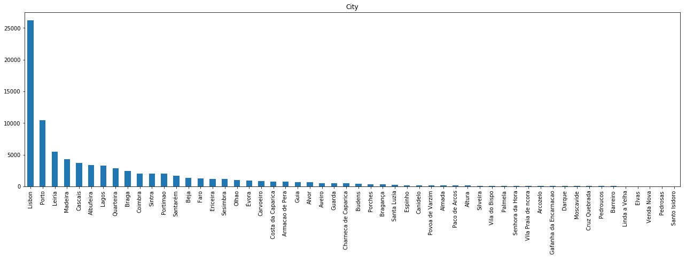
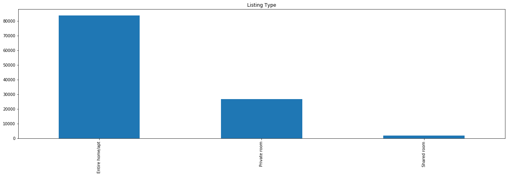

Airbnb Portugal
Airbnb is an online (consumer to consumer) marketplace and hospitality service, where customers publicise, explore and book accommodation for short term periods such as holiday cottages, apartments, homestays, hostel beds and hotel rooms, where typically listings represent property owned by individuals. In a broad sense, Airbnb intends to facilitate experiences related to tourism, allowing to enrol in tourism related activities such as walking tours and make reservations at restaurants. As a broker, Airbnb doesn’t own any real estate, making it a very well-known example of a sharing economy.
Four datasets were used for this analysis, containing information about all properties listed in the platform and located in Portugal, booking activities (which includes Accepted Bookings, Blocked Bookings and Cancelled/Unanswered bookings), monthly details for each property’s bookings (revenue, occupancy rate and number of bookings) and Public Reviews’ information associated to basic user information (review text, non standardized customer’s country of origin and job). However, it is not possible to link a public review with the corresponding booking.
As the platform continues to grow exponentially in users and number of listings, it represents a major pillar of the tourism industry. Airbnb, allied with the continuously decreasing costs of mobility and Information and Communication Technologies, have allowed individuals with a lower income to contribute to this industry as a low cost segment. A study conducted by Bankwest Curtin Economics Centre: “The Impact of Airbnb on Western Australia’s Tourism” (October 2017, page 67-68) suggests that tourists (Holidaymakers) using Airbnb spend on average less in most categories when compared to non-Airbnb users, especially food & accommodation (≈ -880 AUD) and transportation (≈ -270 AUD).
Although Airbnb data can provide valuable information, a few limitations to this study must be pointed out beforehand. It is impossible to assess whether the reviews data is accurate, given that Airbnb's accuracy in their own data is not certain. Furthermore, Airbnb's reviews can be either public or private. As we are only using publicly available data, we do not have access to user data that left a private review, or no review at all. So, we are analysing user profiles that represent about 10% of the total bookings (≈ 1.2 million public reviews) that were actually completed. Although the user data sample extracted from the overall reviews was not randomly generated, it is highly representative. The number of total completed bookings made between September 1st 2014 and December 31st 2017 is 11.550 million Bookings which implies a minimum sample size of 16564 for a 99% confidence level and 1% margin of error. As our dataset has a depth of 1.2 million observations, it is statistically significant (although, we cannot conclude that it is an unbiased sample, as it was not randomly selected).
A second limitation would be the accuracy of data scraped by the data provider, AirDNA. In these datasets, some of the data is not very consistent. For instance, in these datasets the variables regarding monetary value (Daily rates, listing monthly incomes, etc.) are not always directly convertible between USD currency and native currency (euros), where it was found that in these situations variables with USD currency turned out to be more trustworthy than native currency. Same inconsistency applies to variables such as Booked Date, where in situations that the booking was completed this field was still left blank. Aside from these type of situations, some clear outliers were found, as is the case of some bookings that exceeded the price of $100 000 (with a maximum value of $540 954).
Finally, in this analysis the following questions will be addressed:
- Who is booking Airbnb rooms in Portugal? (Profiling)
- Where do they choose to stay? (Geographic analysis)
- When do they do it? (Time Series analysis)
All the data was provided by Nova School of Business and Economics' research centre: Data Science for Social Impact and Management.
This analysis is focused on Smart Tourism Management in Portugal and was developed for Turismo de Portugal, a public national institution responsible for the promotion, enrichment and sustainability of Tourism in the country.
Analysis of All Datasets
Property Listings
We’ll start off by analysing the location of the properties listed in Airbnb. Listings are mainly concentrated in the coastal region of Portugal, especially Lisbon, Porto and Algarve regions.
Listings’ Distribution across cities is highly heterogeneous. The city with most property listings is Lisbon, with over 25 thousand listings. Porto comes second with about 10 thousand listings, where the remaining cities have less than half the number of listings existent in Porto. Although, it is important to mention that at this point there are many listings without a city associated to it (missing values). This challenge will be fixed in the geographic clustering process.
Most of these listings are referring to entire home/apartments, as the number of private rooms represent less than half the number of the former type.
Daily Bookings
The daily bookings table contains information of daily booking activities. Although, aside from completed bookings, this table also includes data from blocked bookings, as well as requested bookings, which include the unanswered requests (or still awaiting an answer). So, in the graph below is depicted the daily count of overall activity in this operation.
Booking activity done in Airbnb has grown exponentially over time. This might be because of two main factors: The growing popularity of Airbnb’s platform, and the growing popularity of Portugal as touristic destination. So, it is possible to conclude that there is a growing number of tourists in Portugal using Airbnb hosting.
Booking activity can mean either a booking request (which means such request is waiting for approval or has been blocked), a cancelled booking, or a booking that was actually completed and went through (which amounts to approximately 21% of the overall booking events). In the plot below is presented booking activity over time between September 2014 and December 2017.
Monthly bookings
We can conclude that although hosting supply is increasing exponentially, there are suggestions of market distortions, as there are many listings do not receive any reservation in several months:
The causes for this factor must be looked into more thoroughly, as it is important to assess whether there are specificities in these listings that cause a low demand for these offers, or there is too much supply in certain regions. This will be studied in the Value analysis presented below.
Listing Reviews
To extract information from this dataset some basic Text Mining techniques were required. This is because none of the data regarding user information is standardized. Although we have some details regarding the user's profile, namely its first name, country of origin, state (if applicable), city of origin, a brief user description, last attended teaching institution and occupation, none of it can be directly used for analysis without prior pre-processing (for the goal of this analysis, the priority was given to the parsing of the country of origin out of the non-standardized text fields: Country and City). This was done by developing a script to detect names of cities and countries out of these two variables. Then, the cities were associated to the corresponding country. Finally, the results from the two parsing processes were merged into a final solution. Out of approximately 1.2 million reviews’ country of origin, 118 thousand were left unparsed (i.e., unsuccessful parse). Finally, this is the top 50 countries of origin for tourists in Portugal:
It becomes clear that the number of French Airbnb users in Portugal is extremely high, which might be caused by two factors: 1) the seasonal immigrant flows from France into Portugal throughout the summer; 2) Airbnb’s popularity in France, which according to Google trends it is in fact, the country in which Airbnb is most popular:
Modelling
To analyse patterns in the data, we will start by segmenting Property Listings by geographic location and value. Afterwards, we will associate the generated clusters to the customer data and bookings data.
From the correlation matrix in the Listings table we can extract some insights regarding what can affect Airbnb listing value and assess which variables we should use for the value clustering:
At this point we can assess some interesting correlations across variables, as is the case with the relationship between the number of Bookings with number of Reviews (-0.77 correlation), and the number of Reviews and Average Daily Rate (-0.24 correlation).
Clustering
Geographic Clustering
We started by clustering listings geographically using the borders of each district in Portugal. To do this, we only used the variables Latitude and Longitude. We started by using a shapefile (source: GADM) to determine to which district each listing belonged to. Afterwards, facing the existence of listings with inaccurate location which because of this reason were not included in any district (e.g., listings located in a river or the sea), we used the K-nearest neighbours algorithm (with K=3) to classify these listings.
We will analyse the characteristics of these defined regions:
Value Clustering
We will use all variables that relate to the listing’s value as a tourism hosting, which in this case would be the Annual Revenue, Average Daily Rate, Occupancy Rate and Number of Bookings. The reason we did not pick the Number of Reviews for a listing is because it is highly correlated with the number of bookings. Hence, in order to avoid a bias in the clustering process, this variable was discarded.
The elbow method will be applied to determine the number of K:
Along the increase of K, the decrease rate of inertia becomes lower when K=5. Considering the classification intuition behind value clustering (distinguish between high, medium-high, medium, medium-low and low value listings) 5 clusters will represent our preferred number of clusters.
Geographic Analysis
As expected, the number of reservations throughout the time frame available are highly seasonal and has increased greatly over time. However, this increase is believed to be attributed to the rise in popularity of Airbnb, instead of Portugal as a touristic destination. The data analysed refers solely to bookings in Airbnb’s platform. As concluded previously, Lisbon yields a very high percentage of total bookings, whereas the second main destination corresponds to Greater Porto region and the third most booked region is Faro. Although, due to Faro’s high touristic seasonality, in August 2017 Faro was the second most booked region in Portugal.
Finally, one can also conclude that the two regions with the overall lowest number of bookings are the districts in the interior of Portugal.
Although Porto district is well ranked in the number of bookings, it falls behind significantly on the sum of generated revenue, when considering the exponential growth of generated revenue by Lisbon and Faro. We can see that although Faro had a lower number of reservations, it is the region with most revenue generated in the high season (June to September).
This suggests that although Porto is frequently chosen as a touristic destination, the value of listings is lower than expected. This can be caused by either (or both) excessive supply or low demand. Although, given the above analysis, one could discard the second hypothesis. Additionally, considering market distortions, it is also possible that bookings’ Daily Rates are not yet well adjusted to the market.
When analysing the plot presented below, we can conclude that in fact Porto region yields one of the lowest revenue per reservation rates. On the same note, Lisbon has this same ratio as relatively average.
It comes to confirm Algarve region’s previously perceived Airbnb value that its value for the above mentioned ratio is the highest of all regions since March 2016. There are some reasons that can explain this fact. Namely, being Algarve highly sought after as a summer touristic destination by northern European countries and English speaking countries with medium to high purchasing power the price level in this region is usually higher, which will reflect on the accommodation’s daily rates. Additionally, the accommodations existing in this area are typically villas, which are significantly more expensive than entire apartments or rooms (given the size of accommodation). Lastly, the existence of more villas when opposed to buildings (when compared to regions like Greater Lisbon and Greater Porto) can also lead to less accommodation supply in a region with high demand, which will drive daily rates up.
Additionally, we can can see another region whose Revenue/Reservation ratio is very interesting: Setubal. As a region known for having good quality bathing regions and also being peripheral to Lisbon, it becomes an attractive region for tourism.
Using the average occupancy rate for each district, we can now analyse the balance between Demand and supply of Airbnb bookings, considering the number of days each listing has been booked. One can see that the demand in Faro district in August last year represents one of the regions with the highest occupancy rate, alongside with Azores, Porto, Setubal and Lisbon. When analysing the plot presented below alongside the ones presented above, this data suggests that overall demand is growing disproportionally given the supply in the market.
On a different analysis, we can see that Porto region did have a high amount of reservations throughout last year and is one of the regions with the highest occupancy rate throughout the year. When checking Porto region’s revenue per reservation, which is one of the lowest of all districts, as well as its number of reservations, which is only lower than Greater Lisbon’s, the study generates two possible outcomes: Either this region has a higher Supply/Demand ratio when compared to the remaining regions, or tourists tend to stay for shorter periods in this region, or both.
The following graphic depicts the representation of tourists from each country of origin in each cluster. As the French are the ones using Airbnb the most in Portugal, they end up ranking first in every cluster. When filtering out France and “others” nationality, some clear differences become clear from cluster to cluster. Portuguese tourists take a significant share in the regions of Tavira (eastern region of Algarve), the northern and southern interior regions of Portugal, and also the region of Braga. These clusters are also in fact the least popular ones for tourism, which can explain the increased representation of Portuguese tourists.
Below is represented the estimated length of stay per Airbnb tourist in each district:
Country of Origin Analysis
The existent data regarding country of origin was extracted from the reviews table. This table contains public reviews made by users after their stay in the listed offer. One must bear in mind that Airbnb differentiates reviews by public and private feedback, both for hosts and guests. So, in this situation we are analysing a sample of user profiles that represent 10% of the total bookings that were actually completed. Although this sample is statistically significant (even though it was not randomly generated), it is important to be aware that the analysis of profiles by country of origin are being made from a sample, instead of the overall bookings.
In the presented plot we can analyse the number of reviews for each month through the available years in the provided data.
We can see that tourist behaviour regarding month of visit is relatively equal across different nationalities, being the peak of tourists in the summer period, comprehended between June and October. Although, three different tourist patterns arise.
Tourists coming from mainly southern Europe countries such as Portugal, Spain, France and Italy are highly concentrated in the month of August, with a local maximum in the months between March and May.
Tourists from Australia, Belgium, Canada, United Kingdom and United States register similar visiting periods. These visitors, unlike the ones previously mentioned, have their booking peaks in two different months, July and September.
As a third pattern, we can see Germany and Poland with their local maxima in September, with relatively high booking counts in the remaining months of the high season.
Below is presented the Average Daily Rate paid by the average tourist from each country of origin. We can see that eastern countries represent the ones with the least purchasing power, whereas central European tourists spend an average amount of money on Airbnb Bookings. Additionally, we can also see that western tourists from the countries Portugal, Spain and France are spending above the average.
Below is depicted the average length of stay for each origin. It is possible to assess that the time of stay does not vary significantly across country of origin:
Value Analysis
Below is presented the weighted average daily rate for each region. The average daily rate was weighted using the number of reservations for each listing in each month. By doing this, we are attributing more weight to the houses with most listings, less weight to the ones with least listings and no weight to the ones without listings.
(formula here)
Finally, we calculated the ratio between Demand represented as the number of reservation, and supply, represented as the number of listings at each given period of time for each region. Additionally, in order to avoid a bias in the supply side, we filtered out listings with less than 5 listings in total, as these can either represent inactive listings or overly recent listings. We can see that Porto has a very high number of reservations per listing, which indicates that it is very sought after, suggesting the the Average Daily Rates in the region might be too low for the existing demand, when compared to the remaining regions.
Simultaneously, we can see that although Évora and Coimbra have low sums of revenue and reservations and a relatively average occupancy rate, they receive an unbalanced number of bookings for the existing number of bookings in the high season. This implies that Airbnb tourists will spend short periods of time in these areas, which is supported by the plot Average Length of Stay in the geographic analysis section.
In opposition, we can see that Madeira island’s Demand/Supply ratio is below average in the high season, having an average daily rate on par with the remaining regions, as well as occupancy rate. Although, Madeira is the region with the highest average length of stay, which explains the low number of bookings. We can also see that this region is one of the regions that least suffers from seasonality.